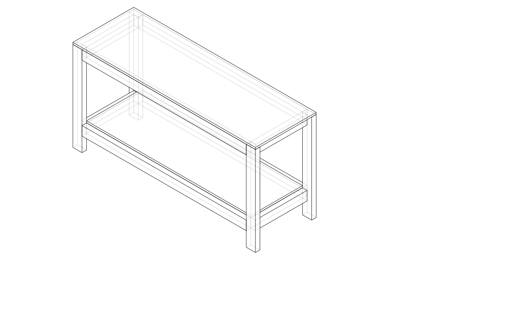
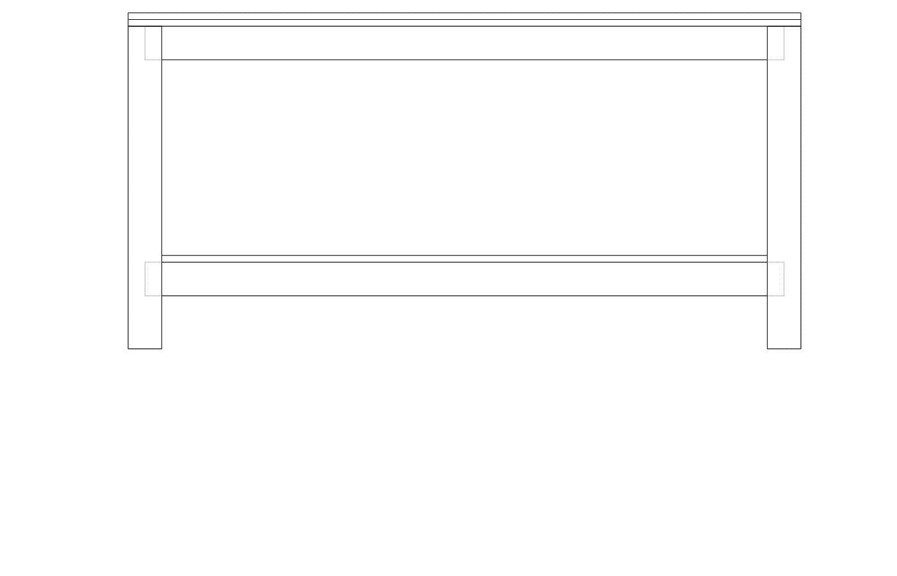
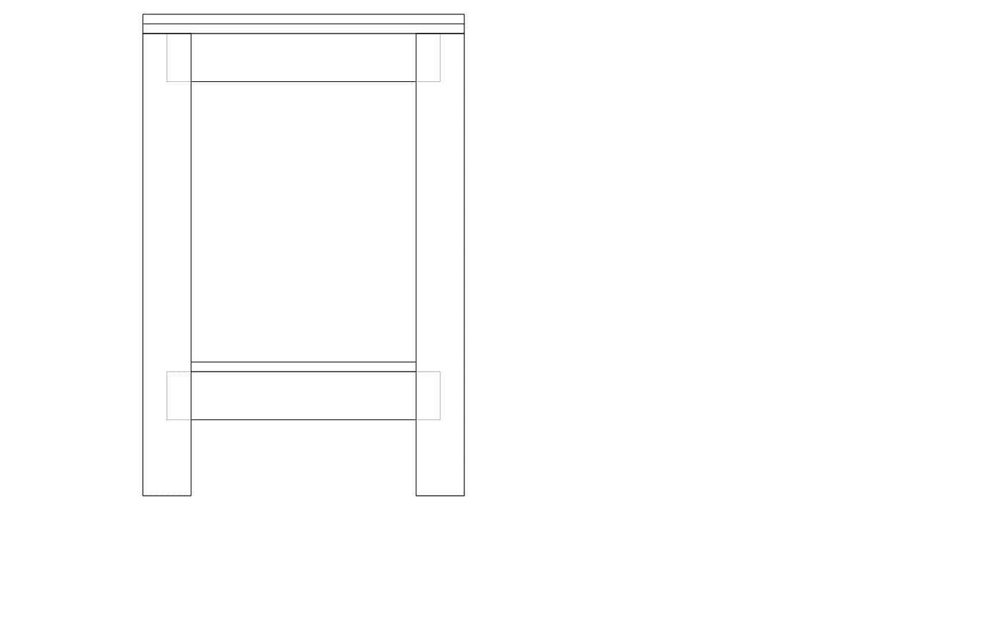

| Item | Qty | Unit | Unit price | Subtotal |
|---|---|---|---|---|
| 90×45 H3.2 rough-sawn framing pine — legs, aprons, stretchers | 13 | meters | $3.20 | $41.60 |
| 18mm F8 structural plywood 2400×1200 — top and shelf | 2 | sheets | $72.00 | $144.00 |
| 75mm construction screws (box 100) — all frame joints, top and shelf | 1 | box | $14.00 | $14.00 |
| PVA wood glue 1L | 1 | each | $12.00 | $12.00 |
| Total | $211.60 | |||
| Part | Qty | L (mm) | W (mm) | T (mm) | Material | Notes |
|---|---|---|---|---|---|---|
| Leg | 4 | 882 | 90 | 45 | 90×45 H3.2 pine | 90 mm face runs left-right |
| Long apron | 2 | 1620 | 90 | 45 | 90×45 pine | Front and back, top |
| Short apron | 2 | 510 | 90 | 45 | 90×45 pine | Left and right ends, top |
| Long stretcher | 2 | 1620 | 90 | 45 | 90×45 pine | Front and back, lower |
| Short stretcher | 2 | 510 | 90 | 45 | 90×45 pine | Left and right ends, lower |
| Top | 1 | 1800 | 600 | 18 | 18 mm F8 ply | Work surface |
| Lower shelf | 1 | 1620 | 510 | 18 | 18 mm F8 ply | Inset between legs |
Framing total: 12.0 m of 90×45 mm — buy 13 m to allow for end cuts.
Suggested lengths: 3× 4.8 m + 1× 3.0 m, or whatever combination covers 13 m with minimal waste.
Plywood: 2 sheets of 2400×1200×18 mm F8 structural ply.
Sheet 1 → top (1800×600). Sheet 2 → shelf (1620×510) with offcut to spare.
Buy rough-sawn framing timber — Purchase 90×45 H3.2 rough-sawn framing pine from the framing rack (not the dressed joinery section). This is standard house-framing stock — cheaper, widely available, and perfectly adequate for a workbench. Wear gloves when handling green treated timber. Sight down each length and reject anything badly bowed or twisted; a slight crown is fine. Actual cross-sections run ±2–3 mm from nominal — this makes no difference for toe-nailed butt-joint construction.
Cut legs to length — Cross-cut 4 legs at 882 mm using a handsaw. Mark a square line around all four faces with a combination square before cutting. Bundle the 4 legs and check they are the same length.
Cut aprons and stretchers — Cross-cut the remaining 90×45 to:
Label each piece immediately — aprons and stretchers are the same length per pair but live at different heights.
Stretcher shoulder: 142 mm up from the bottom (stretcher bottom face = 142 mm; top face = 232 mm; shelf top = 250 mm).
Build the end frames — For each of the two end frames (left and right):
a. Lay two legs on the floor parallel, 510 mm apart (inside-face to inside-face).
b. Clamp a short apron across the top between the legs, top faces flush, inside face of apron flush with the inside face of each leg. Check square by measuring both diagonals.
c. Toe-nail 3× 75 mm construction screws per joint from inside the frame: tilt the drill to ~30° and start each screw on the inside face of the apron, about 20–25 mm back from the joint end, angling into the leg face — one angled up, one angled down, one roughly straight. The screw travels through apron face grain and bites into leg face grain — no end grain involved. Apply PVA to the joint face first. A 3 mm pilot at the same angle prevents splitting.
d. Repeat for the short stretcher at the lower position.
e. Stand the end frame up. Build the second end frame identically.
a. Fit the two long aprons front and back. Clamp them in position and check the frame is square (measure diagonals across the top opening).
b. Working from inside the frame, toe-nail 3× 75 mm construction screws per joint: tilt the drill to ~30°, start each screw on the inside face of the apron about 20–25 mm from the end, angling into the leg face — one angled up, one angled down, one straight. Apply a dab of PVA to the joint face first.
c. Fit the long stretchers the same way.
d. Recheck square and adjust if needed (a diagonal tap with a hammer usually corrects a few mm).
Cut plywood — From sheet 1, cut the top: 1800×600 mm. From sheet 2, cut the shelf: 1620×510 mm. A circular saw with a clamped straight-edge gives a clean straight cut; alternatively ask the timber yard to rip the sheets for you.
Attach the top — Place the plywood top on the frame, centred side-to-side. Drive 75 mm construction screws at an angle through the top edge of each apron up into the underside of the plywood — 3 screws per long apron and 2 per short apron. No countersink needed; the screw head pulls into pine.
Fit the shelf — Drop the shelf panel onto the stretchers. Drive 2× 75 mm screws per stretcher through the shelf into the stretcher top face to hold it captive.
Finish — The H3.2 treated pine needs no additional finish for a garage environment. Round any sharp corners with a few passes of 80-grit sandpaper. The plywood top can be left bare and will harden with use, or apply 2 coats of boiled linseed oil for moisture resistance.